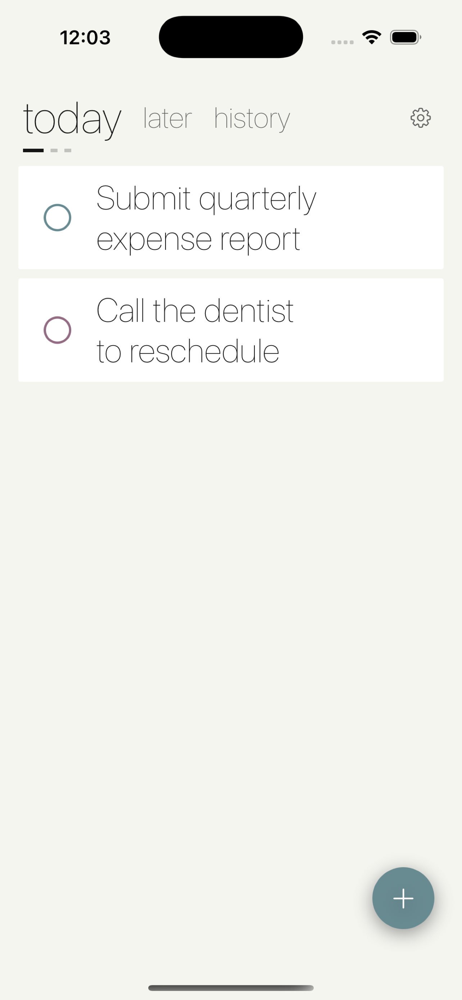
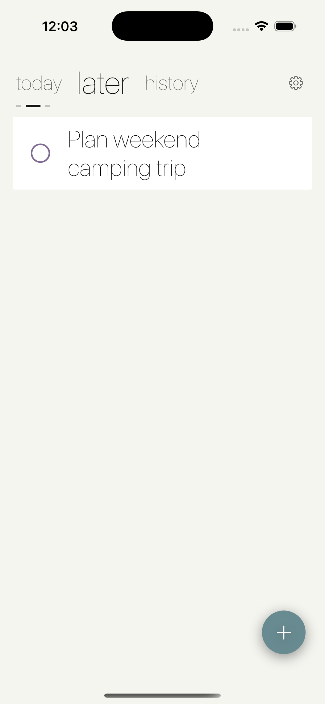

Today Or Not
Two lists. Today, or not. That's the whole system.
Two lists. Today, or not. That's the whole system.
Today Or Not is a deliberately minimal to-do app built on one decision: every task is either today or later. A third panel holds your completed history. Swipe between panels the way you'd swipe through a hub — no projects, no tags, no priority matrix to maintain.


Today or later. Tasks due or overdue move to today automatically.
Due-date reminders carry Complete and Move actions right in the banner — no need to open the app.
Every completed task is timestamped and one swipe from being reopened.
No account, no dependencies, no data leaving your device.
Keep Exploring
Back to the full app portfolio